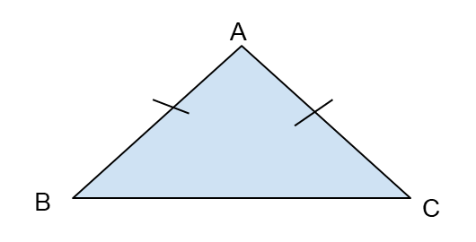
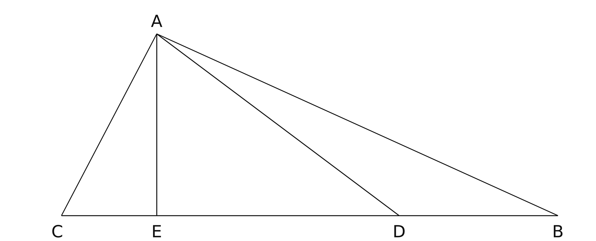
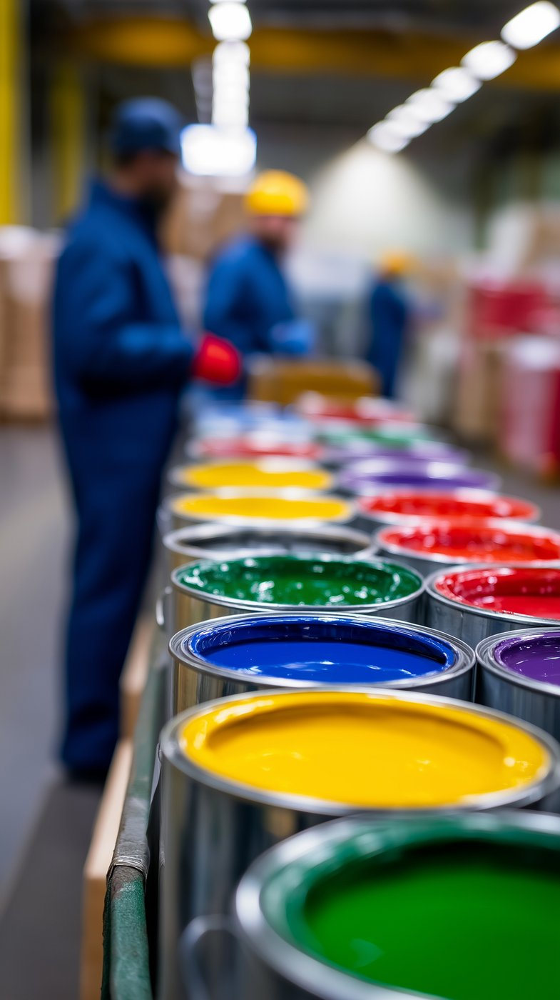

حان الوقت لـ 3 أسئلة متقدمة


1. يخطط مكتب مهندسين معماريين لتصميم عنصر تظليل في شارع مشاة في المدينة.
صُممت واجهة العنصر على شكل مثلث متساوي الساقين (AB = AC).
وضعَ المهندس الرئيسي شرطًا هندسيًا:
النسبة بين زاوية الرأس ومجموع زاويتَيّ القاعدة هي 3 : 1.
أ. احسبوا زوايا المثلث ABC الثلاث.
ادّعى مهندس معماري شاب أنه لا يمكن إنشاء مثلث كهذا، لأن زاويتَيّ القاعدة ستكونان منفرجتين (أكبر من 90 درجة)، ممّا سيؤدي إلى عدم تكوُّن شكل مثلث.
ب. هل ادّعاء المهندس المعماري الشاب صحيح؟
2. النقطة D تقع على الضلع CB في المثلث ABC.
معطى: النسبة بين مساحة المثلث ACD ومساحة المثلث ADB هي 3:1.
مساحة المثلث ABC هي 64 سم مربع.
AE = 8 سم (ارتفاع المثلث).
أكملوا:


3. يعمل أمجد ونسيم في مصنع للدهان.
لصُنع درجة مميزة من اللون "الأخضر الزيتوني"، يخلطان ثلاثة ألوان:
أصفر، أزرق وأسود بنسبة 2 : 3 : 5 (بالتلاؤم).
يوم الأحد، حضّرا كمية كبيرة من الدهان واستخدما 12 لترًا من الدهان الأسود.
أ. أكملوا الكميات:
أرادت روان، وهي عاملة أخرى في المصنع، أن تصنع درجة أغمق من نفس اللون.
للوصول إلى الدرجة المطلوبة، قررت مضاعفة كمية الدهان الأسود فقط بمرتين،
بينما بقيت كميتا الأصفر والأزرق كما كانتا يوم الأحد.
ب. أي من الجُمل التالية تصف النسبة الجديدة بين المكونات (الأصفر، الأزرق، الأسود) بالشكل الصحيح؟